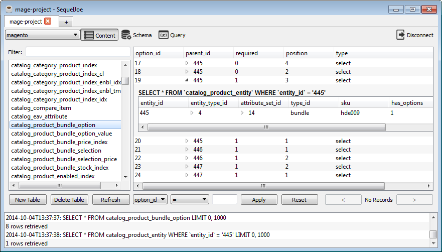

*sequeljoe
An administration tool for SQL databases
Current version: alpha 0.2
SequelJoe is inspired by the excellent SequelPro, but runs on Linux and Windows.
SequelJoe is written in C++/Qt and currently supports MySQL/MariaDB and Sqlite, although adding support for other databases is trivial
SequelJoe is GPLv3 licensed.
How do I get SequelJoe?
Binaries for windows are packaged and attached to the github release:
https://github.com/ohwgiles/sequeljoe/releases
For Arch Linux, SequelJoe is available from the AUR:
$ yaourt -S sequeljoe
To install from source:
$ # first install development libraries for qt5, libssh2, libmariadb, libsqlite
$ git clone https://github.com/ohwgiles/sequeljoe.git
$ mkdir -p path/to/build && cd path/to/build
$ cmake path/to/source -DCMAKE_BUILD_TYPE=Release
$ make
$ git clone https://github.com/ohwgiles/sequeljoe.git
$ mkdir -p path/to/build && cd path/to/build
$ cmake path/to/source -DCMAKE_BUILD_TYPE=Release
$ make
I found a bug / I want to request a feature
Contact me through github. Or, fork sequeljoe and send me a pull request